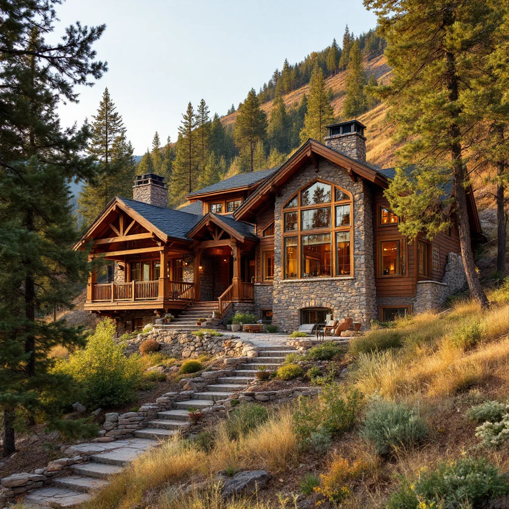

Manitou Springs is a historic mineral springs town of approximately 5,400 residents tucked into a narrow canyon at the base of Pikes Peak, just west of Colorado Springs. Famous for its eight public drinking springs, proximity to Garden of the Gods, and charming Manitou Avenue arts district, the town draws visitors year-round. But that same natural spring water and canyon geography create serious moisture challenges for Manitou Springs homeowners. The mineral springs raise local humidity levels well above the Colorado average, and the canyon walls restrict airflow, trapping damp air around older structures. Most homes in Manitou Springs date to the Victorian era, built with stone foundations, plaster walls, and minimal vapor barriers. These aging buildings absorb and hold moisture, making mold growth a persistent problem. Springs Mold Solutions specializes in careful mold remediation for Manitou Springs' historic properties without compromising their architectural character.

Our Mold Removal Process
- Free Mold Inspection — We inspect your Manitou Springs property to identify mold type, source, and extent.
- Containment — We seal affected areas with plastic sheeting and negative air pressure to prevent spread.
- Air Filtration — HEPA air scrubbers capture airborne mold spores throughout the remediation.
- Mold Removal & Cleaning — We remove contaminated materials and treat surfaces with antimicrobial agents.
- Moisture Control & Prevention — We address the moisture source and apply preventive treatments to stop recurrence.
Why Manitou Springs Homeowners Trust Springs Mold Solutions
- Historic Building Experience — We understand how to remediate mold in Victorian-era stone and plaster construction without damaging original materials, trim, or architectural details.
- Mineral Springs Moisture Knowledge — Manitou Springs has humidity conditions unlike anywhere else in the Pikes Peak region. We address the root moisture causes specific to this unique microclimate.
- Licensed, Insured, and Certified — Our technicians hold current mold remediation certifications, carry full liability insurance, and follow strict industry protocols on every project.
- Minutes Away — Manitou Springs is less than 10 minutes from Colorado Springs, giving us the fastest possible response times for inspections and emergency mold situations.
Frequently Asked Questions — Mold Removal in Manitou Springs
Why is mold so common in Manitou Springs homes?
Manitou Springs has uniquely high humidity for a Colorado town due to its natural mineral springs and the creek that runs through the center of the community. The town sits in a narrow canyon at the base of Pikes Peak, which limits airflow and traps moisture. Most homes in Manitou Springs were built in the late 1800s or early 1900s with stone foundations, minimal vapor barriers, and no modern ventilation systems. This combination of elevated humidity, older construction, and restricted air circulation makes Manitou Springs one of the most mold-prone communities in the Pikes Peak region.
Can you work on historic Victorian homes in Manitou Springs?
Yes. Many of our Manitou Springs projects involve historic Victorian-era buildings that require careful remediation to preserve original materials. We use techniques that effectively remove mold without damaging historic plaster, stonework, or wood trim. Our crews understand the constraints of working on older structures, including limited access, lead paint considerations, and the need to maintain architectural integrity while resolving moisture and mold problems.
How much does mold removal cost in Manitou Springs?
Mold removal in Manitou Springs typically ranges from $1,500 to $6,000 for residential projects. Older historic homes can sometimes cost more due to the complexity of accessing affected areas behind plaster walls and stone foundations. We provide free inspections and transparent written estimates before beginning any work, so you always know the full cost upfront.
Need Mold Removal in Manitou Springs? Call Now
We're your local mold removal experts serving Manitou Springs and all surrounding areas.
📞 Call (719) 496-8287